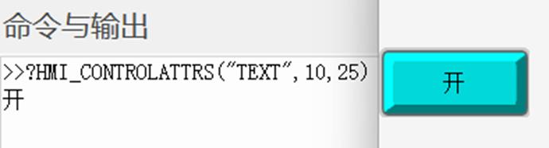
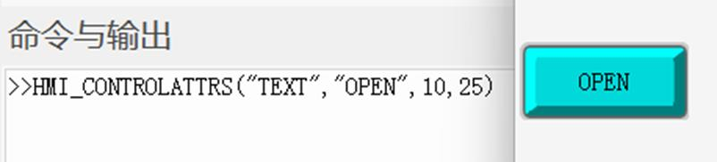

|
类型 |
元件操作指令 | ||||||||||||||||||
|
描述 |
获取/设置元件的指定字符串属性值 注：操作前需确保操作的元件具有该属性。 | ||||||||||||||||||
|
语法 |
string = HMI_CONTROLATTRS (strProperty [,winid, controlid]) HMI_CONTROLATTRS(strProperty, string [,winid, controlid]) strProperty：指定操作的元件属性
注：多状态属性，可在元件属性后面追加%n访问不同属性，例如"TEXT%2"表示状态2的元件文本。
winid：HMI文件里面窗口编号，缺省为当前窗口 controlid：元件编号，缺省为当前元件 string：属性字符串 | ||||||||||||||||||
|
适用控制器 |
支持ZHMI | ||||||||||||||||||
|
例子 |
例一： ?HMI_CONTROLATTRS("TEXT",10,25) ’打印窗口10元件25的元件状态显示文本  例二： HMI_CONTROLATTRS("TEXT","OPEN",10,25) ’设置窗口10元件25的元件状态文本为OPEN  |